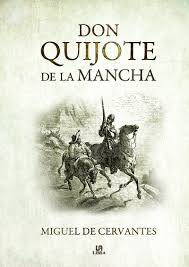
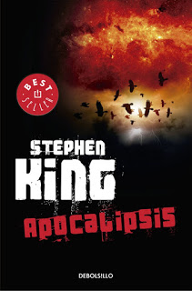
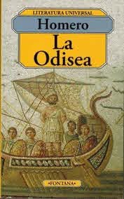
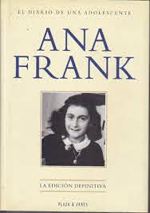

"El Quijote"

El Quijote es la obra más conocida de Miguel de Cervantes Saavedra. Publicada su primera parte con el
título de El ingenioso hidalgo don Quijote de la Mancha a comienzos de 1605, es una de las obras más
destacadas de la literatura española y la literatura universal, y una de las más traducidas. En 1615
aparecería la segunda parte del Quijote de Cervantes con el título de El ingenioso caballero don
Quijote de la Mancha.
El Quijote fue la primera obra genuinamente crítica contra la tradición caballeresca y cortés, por el
tratamiento burlesco que da a la misma. Representa la primera obra literaria que se puede clasificar
como novela moderna y también la primera novela polifónica, y como tal, ejerció un influjo abrumador
en toda la narrativa europea posterior. En el año 2002 se realizó una lista con las mejores obras
literarias de la historia, el Quijote encabezó la lista siendo citada como "el mejor trabajo
literario jamás escrito".
"Apocalipsis"

"Apocalipsis" de Stephen King es una de las novelas más largas que ha creado éste autor, de alrededor
de 1500 páginas, claro está que la reseña girará en torno a la reedición sin cortes que se publicara
en 1990 y que el autor se permitió añadirle partes que los editores habían quitado a favor de la
brevedad en el año de 1978 cuando vio la luz por primera vez. Además adecuó la nueva versión para
que presentara referencias a la cultura pop y ambientación de finales de los años ochenta.
Trata de un virus gripal, creado artificialmente como posible arma bacteriológica, se extiende por
Estados Unidos y el mundo, provocando la muerte de la mayor parte de la población. Los
supervivientes tienen sueños comunes, en los que aparece una anciana y un hombre joven. La mujer
anciana los incita a viajar a Nebraska para combatir a Randall Flagg, un abominable personaje que
lidera las fuerzas del mal y busca la aniquilación definitiva de la humanidad mediante un temible
arsenal nuclear.
"La Odisea"

En la mitología Griega narra la historia de Odiseo el rey de Ítaca, cuenta que este no ha regresado a
casa por lo que muchos lo creen muerto, hecho que no es cierto debido a que la diosa Calipso lo
tenia retenido, ademas Poseidon (dios del mar) no lo dejaba regresar por haber cegado a su hijo.
Por otro lado en Ítaca su esposa Penelope es asesinada por pretendientes que querían casarse con ella
debido a que creían que Odiseo había muerto, lo que trae como resultado que la diosa Atenea aconseje
a Telémaco hijo de Ulises que busque información de su padre.
"El Diario de Ana Frank"

Ana nació en Alemania en junio de 1929 y murió en 1945 en el campo de concentración Bergen-Belsen
víctima de tifus. La menor de la familia judía Frank, escribió su Diario… durante los dos años que
la familia permaneció escondida en un anexo del negocio del padre, en Amsterdam. Al ser encontrados
por la policía alemana los Frank fueron arrestados y enviados a campos de concentración. Ana y su
madre murieron a principios de 1945, justo antes de terminar la guerra.
El Diario de Ana Frank es el testimonio de una víctima del delirio a que llegó el mundo por acción de
los nazis. Fue encontrado y publicado por Miep Gies, una amiga de la familia, en 1947.